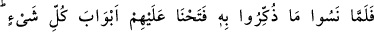
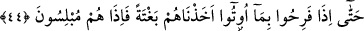
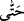
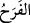
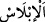

gerektirdiği halde bunu da yapmadılar. Burada onlar kınanmakta ve pişmanlığa
sevkedilmektedir. Bu, dua edenin fiile teşebbüs ettiği ve terk etmeye mazeret kalmadığı
zamandır.
“Fakat kalpleri katılaştı.” Bu ifadeyle mânâ zenginleştirilmektedir. Yani, onlar
yalvarıp yakarmadılar, fakat kalpleri kurudu, katılaştı. Eğer kalplerinde bir yumuşaklık
ve korku olsaydı yalvarıp yakarırlardı.
“Şeytan da onlara yaptıklarını güzel gösterdi.” Şeytan onları aldatarak küfür ve
günahları güzel gösterdi. Onları, tefekkür ve düşünmeyi bırakıp lezzet ve rahata
koşmaya çağırdı. Onun için de maruz kaldıkları sıkıntı ve darlıkların ancak inkarları ve
günahları yüzünden başlarına geldiği hatırlarına bile gelmedi.
44. Kendilerine yapılan uyarıları unuttuklarında, (indirmiş olduğumuz sıkıntı ve
musibetleri kaldırıp) üzerlerine her şeyin kapılarını açtık. Nihayet kendilerine
verilenler yüzünden şımardıkları zaman onları ansızın yakaladık, birdenbire onlar
bütün ümitlerini yitirdiler.
“Kendilerine yapılan uyarıları unutunca” Yani, onlar şeytanın güzel gösterdiği
amellere dalıp uyarıldıkları darlık ve sıkıntıları unuttular. İşte onlar bunu unutunca
“onlara her şeyin kapılarını açtık.” İstidrac yoluyla onlara çeşit çeşit nimetler verdik.
“Kendilerine verilenlerle şımardıkları zaman da”
“
” kelimesi başlangıç ifade eder. (Âyete buna göre mânâ verilmiştir.)
Aynı zamanda sonuç ifade eder. Buna göre mana şöyle olur: “Nihayet kendilerine
verilen nimetlerle şımardılar”
“
” taşkınlık sevinci demektir. Tıpkı Karun’un, eline geçen dünya malına
sevinerek taşkınlık göstermesi gibi.
“Ansızın” aniden “onları” azabla “yakaladık.” Ani olması, daha te’sirli ve daha
korkunç olması içindir. Nitekim ehl-i mânâ der ki: Onlar rahat ve bolluk halinde
yakalandılar. Bunun sebebi, kaçırdıkları afiyet ve sıhhat hallerine duyacakları nedamet
ve hasretlerinin daha da şiddetli olması içindir.
“Birden bire bütün umutlarını yitirdiler.” Umdukları bütün hayırlardan ümitlerini
kestiler, hasret ve nedamete düştüler.
“
” helak ve yok olma anında kurtuluştan tamamen ümit kesmektir; hasret duyma
ve üzüntüye boğulma manasınadır.